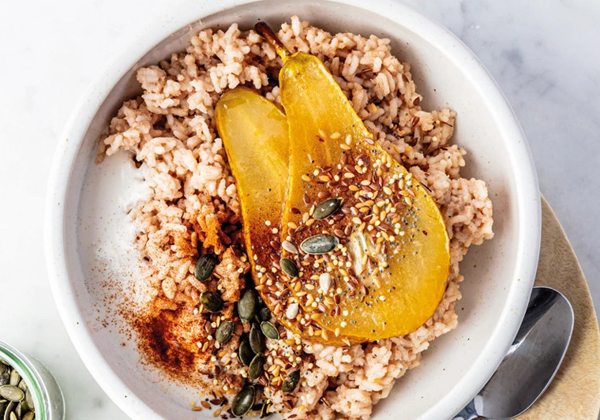
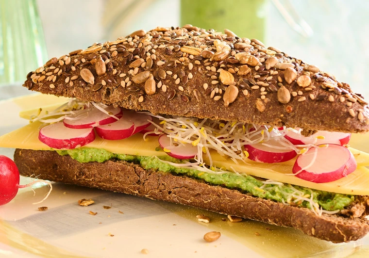
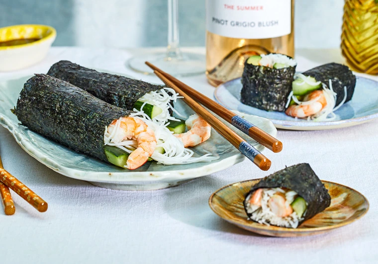
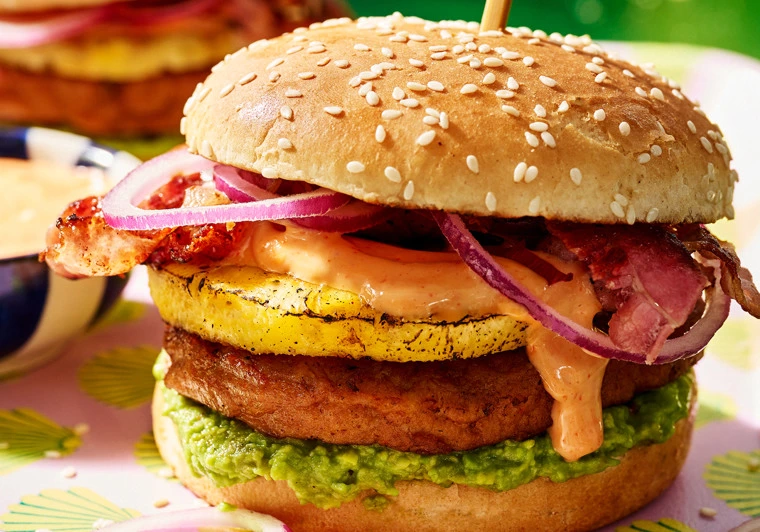
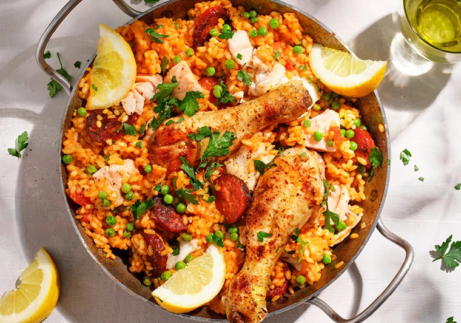
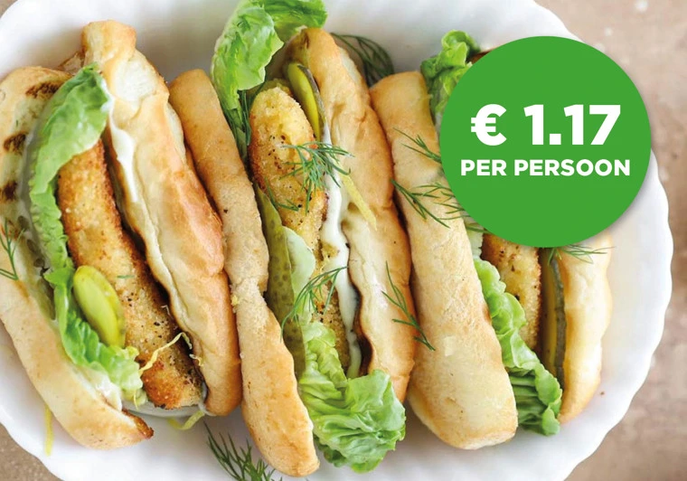
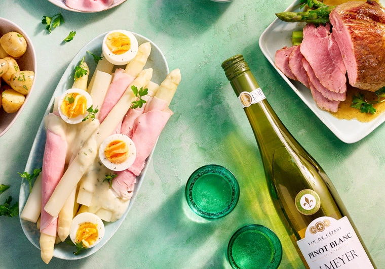
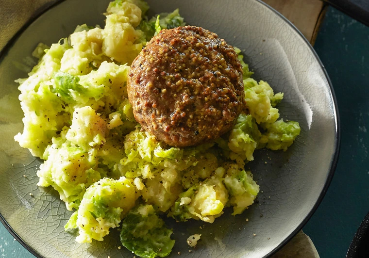
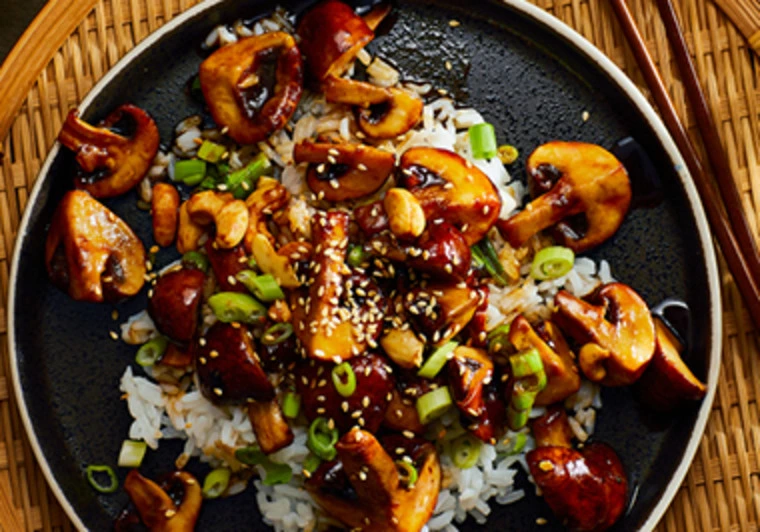
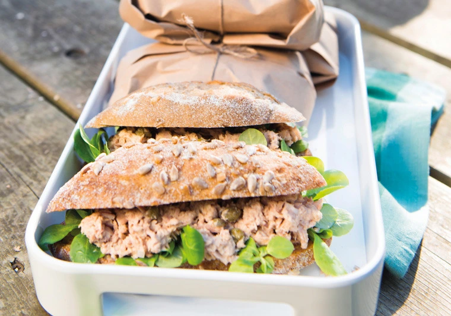

Haal je inspiratie uit onze recepten!
Op zoek naar inspiratie voor het avondeten? Bij Vomar Voordeelmarkt
vind je veel recepten waar je direct heel gemakkelijk mee aan de slag kunt.
Zo kun je bij ons wekelijks koken met korting en vind je elk seizoen weer nieuwe,
bijpassende recepten.

Herfstrecepten
Van paddenstoelenquiche, kaneelcake, stoofpeertjes tot een heerlijke bosvruchtentiramisu.
De knuste herfstrecepten vind je hier allemaal op een rijtje. Vomar geeft je de beste
recepten én tips om de gerechten een gegarandeerd succes te maken!
▶ Naar de recepten

Frisse start
Speciaal voor iedereen die terug is gekomen van zijn/haar heerlijke vakantie, hebben wij
12 nieuwe gezonde recepten bedacht om er voor te zorgen dat jij weer fris van start kan gaan!
Laat je inspireren door heerlijke gerechten die ook makkelijk mee te nemen zijn naar werk of school.
▶ Naar de recepten

Wereldrecepten
Er zijn heerlijke recepten samengesteld waarmee je een reis maakt door onze wereldkeuken. Zo waan je
je in Aziatische sferen met de spekkoek, lijkt het net alsof je bij de Taverne in Italië zit met onze
Grand Italia pasta pesto en kan je genieten van het Spaanse Zonnetje in je glas met het recept voor
Sangria.
▶ Naar de recepten

Barbecue recepten
Bij Vomar profiteer je de hele zomer lang van vast volumevoordeel op barbecuevlees! Daarnaast bieden we
nog veel
meer lekkers voor op de barbecue, zoals kies & mix assortiment, vis van de visspecialist, surf en turf,
groentespiesjes
en heerlijke barbecuebijgerechten waar ook vast volumevoordeel op geldt!
▶ Naar de recepten

Zomerrecepten
Wij hebben voor jou de lekkerste zomerrecepten samengesteld: van een heerlijke zomerse paella,
aardbeientosti tot sundae ijs.
▶ Naar de recepten

Budgetrecepten
12 heerlijke recepten voor de kleine portemonnee, alle recepten zijn
namelijk onder de €2,00!
▶ Naar de recepten

Voorjaarsrecepten
Laat je ook inspireren door onze heerlijke voorjaarsrecepten. Volg de recepten stap voor
stap en zet heel gemakkelijk de heerlijkste gerechten op tafel. Ga bijvoorbeeld voor Hollandse
asperges gewikkeld in ham met aspergesaus of sluit je paasdiner af met een grand dessert!
▶ Naar de recepten

Oer-Hollandse recepten
Hier vind je typische Hollandse recepten voor elk moment van de dag, denk bijvoorbeeld aan echte
Brabantse worstenbroodjes of een traditionele spruitjesstamppot met gehaktbal. Houd je liever van zoet?
Maak dan heerlijke wentelteefjes met stroop of crunchy pindakaas voor op brood. Bekijk snel al onze
recepten uit de Hollandse keuken!
▶ Naar de recepten

Vegetarische recepten
Minstens een keer per week vegetarisch eten is niet alleen heel verantwoord maar ook nog eens heel
duurzaam.
Het mooie van deze recepten is, dat je het vlees niet eens mist!
▶ Naar de recepten

Duurzaam en verantwoord genieten
Bij Vomar laten we zien dat duurzaam en discount heel goed samen gaan. Daarom hebben we verantwoorde
recepten opgesteld,
zodat je verantwoord kunt genieten. Het hoofdingrediënt in elk recept bevat een duurzaam keurmerk.
▶ Naar de recepten